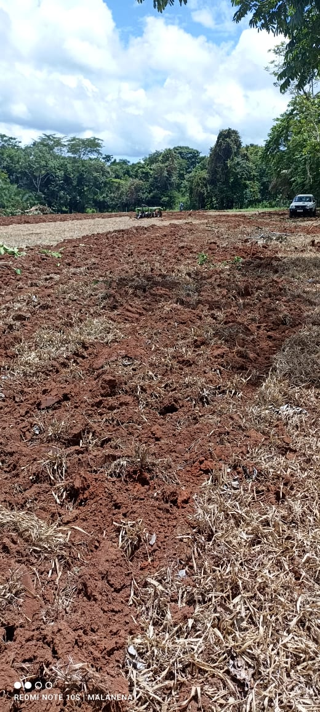
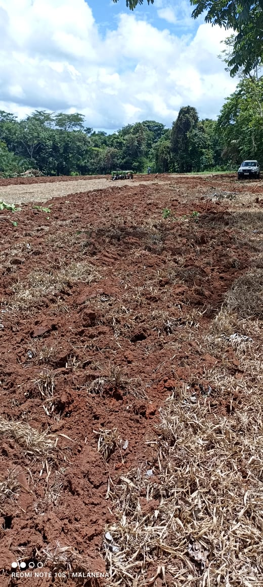

O Início de um Sonho
A Horta Dois Irmãos começou como um pequeno projeto entre dois irmãos, inspirados pela paixão de cultivar alimentos frescos e saudáveis. No começo, o terreno era simples, com a terra bruta e muita vontade de fazer acontecer. Em Chupinguaia, Rondônia, o local era inicialmente um espaço vazio, esperando para ser transformado em algo grandioso.
A Transformação
Após meses de trabalho árduo, os irmãos começaram a ver o fruto de seus esforços. A terra foi preparada, as primeiras sementes foram plantadas, e logo a horta começou a ganhar vida. Não foi fácil, mas cada etapa trouxe lições importantes sobre cultivo, resiliência e trabalho em equipe.
 

O Crescimento
Hoje, a Horta Dois Irmãos é referência em cultivo sustentável na região, fornecendo alimentos de alta qualidade para a comunidade local. O que começou como um sonho se tornou uma realidade próspera e abundante.